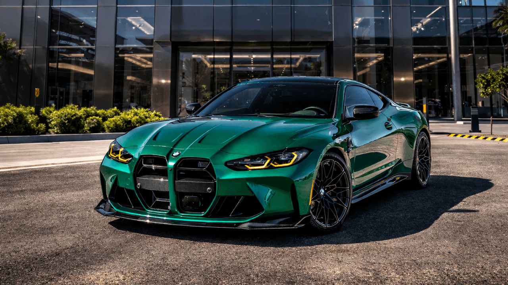

BMW M4, gücünü kaputunun altında yatan TwinPower Turbo sıralı 6 silindirli motordan alan tam bir performans canavarıdır [BMW M4 - Vikipedi]. Güncel neslinde 530 beygir güç üreten bu motor, akıllı M xDrive dört çeker sistemiyle birleştiğinde aracı 0'dan 100 km/sa hıza sadece 3.5 saniyede ulaştırır [BMW 4 Serisi Coupé M modelleri (G82 & G22): Modele genel bakış ...]. Hem pistlerde tur rekorları kırmak hem de caddelerde adrenalin dolu bir sürüş deneyimi yaşamak için özel olarak geliştirilmiştir.

Tasarımında kullanılan karbon fiber detaylar ve kaslı gövde hatları, otomobilin agresif karakterini ilk bakışta ortaya koyar. Yenilenen devasa böbrek ızgaralarıyla modern ve cesur bir görünüme kavuşan M4, kokpitinde ise en üst düzey dijital teknolojileri ve lüks spor koltukları bir arada sunar [BMW 4 Serisi Coupé M modelleri (G82 & G22): Modele genel bakış ...]. Hem göz alıcı bir şıklığa hem de sürücüyü tamamen sarmalayan bir yarış otomobili hissiyatına sahiptir.